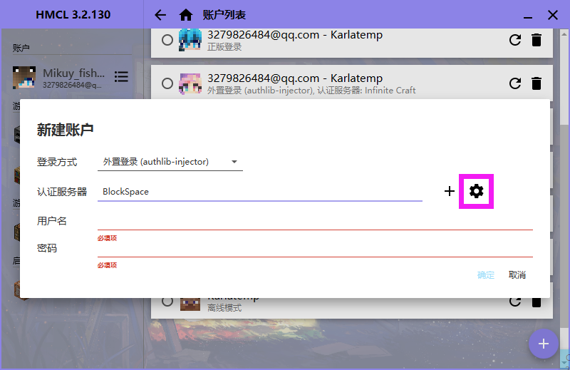

K Wiki
wiki
注册
从 这里 注册一个账户, 然后绑定您的QQ方可登录下载
首先,你需要下载一个启动器, 比如 HMCL (个人推荐)配置
打开我们的启动器,在左上方有 账户, 点击列表
点击右下角的 + 号
选择外置登录
点击小齿轮

点右下角的 +, 地址填 https://auth2.nide8.com:233/f2894ffc98e711e9921b525400b59b6a 然后回到刚才新建账户的地方, 认证服务器选 BlockSpace, 用户名为你的QQ邮箱 Here is nothing. yep?